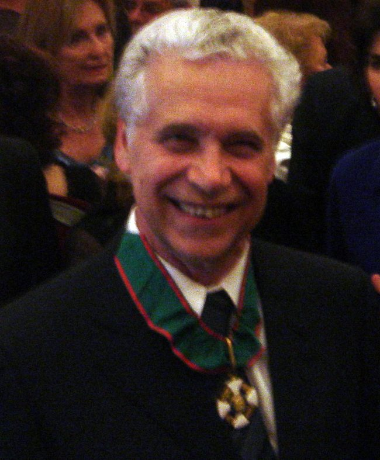
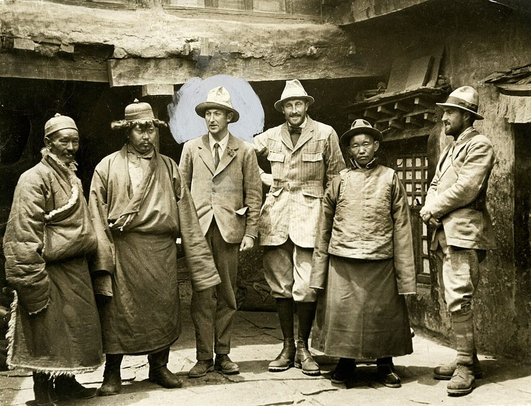

这一章在做什么
前四段补一课：弦理论是怎么「撞」出来的，为什么这么难。然后作者第三次去问费曼，这回直接点名弦理论，被吼了出来。费曼的话全是短句和反问，要分清哪句是讽刺。出门又被秘书 Helen 训一顿。全章的落点是最后一个词：谁在暗中保着施瓦茨。
这一章的三段
第 1–4 段
历史课
弦理论是碰巧发现的
第 5–30 段
费曼的办公室
问他怎么看，被吼出来
第 31–44 段
走廊上
Helen 再训一遍，漏了句话
作者自己的说法：先被「爸爸」骂，再被「妈妈」骂
本站示意图。前四段全是书面语，后面几乎全是对话，读起来是两种节奏。
背景：作者默认你知道的事
这一章的人名多半一笔带过，几个比喻背后都有美国读者熟悉的典故。
维内齐亚诺 Gabriele Veneziano 意大利人，1967 年还是研究生。坐在台下听盖尔曼讲课，一年后找到了那个公式。
丘 Geoffrey Chew 伯克利教授，施瓦茨的博士导师，S 矩阵理论的领头人。上一章讲过。
南部、萨斯坎德 Nambu, Susskind 1970 年说出公式背后的图像：粒子是振动的弦。第 9 章有照片。
施瓦茨 John Schwarz 加州理工的弦理论家。这一章没露面，但人人都在说他。
海伦 Helen Tuck 这层楼的秘书，主要替费曼和盖尔曼做事。两个人她都敢顶。
埃里切和那所暑期学校
埃里切的城堡。小城建在山顶，脚下是西西里西部的平原。
Krzysztof Popławski，CC BY 4.0，维基共享资源

维内齐亚诺，2007 年在日内瓦受勋时。听那次讲课时他二十多岁。
Betsy Devine，CC BY-SA 2.5，维基共享资源 埃里切（Erice）是意大利西西里岛西端的一座中世纪山城。Centro Ettore Majorana 是设在那里的科学中心，每年夏天办物理暑期学校：请名家讲课，各国研究生来听。名字纪念 1938 年失踪的意大利物理学家马约拉纳。
青霉素和挖骨头的人
弗莱明在伦敦圣玛丽医院的实验室里看培养皿，1944 年。
英国新闻部摄影处，公有领域，维基共享资源
1877 年科罗拉多州的恐龙化石发掘，当时的人画的。
Arthur Lakes，公有领域，维基共享资源
第 2 段连用两个比喻。青霉素是 1928 年弗莱明（Alexander Fleming）偶然发现的：一只培养皿被霉菌污染，霉菌周围的细菌死了。没人事先设计它。古生物学家（paleontologist）的比喻说的是现在：东西已经露出一角，大家一点点往下刨，还不知道整副骨架是什么。
「正负一个月」
物理学家报测量结果要带误差范围，写成「某数 ± 某数」，读作 plus or minus 。那位同学给交稿日期也标了误差：1989 年 6 月，正负一个月。笑点在后面：实际拖了十来年，误差比预计的整个工期还大许多倍。
向天主教主教问候「太太和孩子」
天主教的神父和主教终身不结婚。跟主教闲聊时顺口问一句「您太太孩子都好吧」，问的人自以为是客套，其实整句话的前提就错了。第 19 段用它形容费曼的表情：作者以为「把所有的力统一起来」是物理学家人人都认的目标，在费曼那里这个前提不成立。
「因为山在那里」
从西藏绒布河谷看珠穆朗玛峰北坡。马洛里走的就是北侧。
Luca Galuzzi，CC BY-SA 2.5，维基共享资源

1924 年英国珠峰探险队的几名队员在西藏协格尔。左起第三人（头部被后人圈出）是马洛里。
作者不详，1924，公有领域，维基共享资源
英国登山家马洛里（George Mallory）1923 年被记者问为什么要登珠峰，答了一句 Because it’s there 。第二年他死在珠峰上。这句话在英语里成了「为了做而做」的代名词。第 30 段费曼反着用：挑研究题目不能凭这个理由。
这一章的物理，先用中文过一遍
四种力、「统一」是什么意思、弦是什么、多出来的维度怎么卷起来，第 9 章那一页都讲过。这一章新添的是三件事：弦理论的来历是倒着的；它缺一条引路的原理；费曼拿什么理由不买账。
一、先有公式，后有道理
正常的顺序是：实验冒出新事实，或者有人提出一条新原理，然后才有理论，理论再给出能检验的预言。第 2 段说这叫理论是被自然界「逼出来的」。弦理论反过来：先有人凑出一个管用的公式，过了两年才有人说清这个公式在描述什么东西，至于它背后的原理，到现在还在找。
一般的新理论
新的实验事实或原理
理论
能拿去检验的预言
弦理论
数据里的规律
碰巧管用的公式
事后的解释：弦
原理？预言？
1967
1968
1970
还在找
第 2 段的两个比喻（青霉素、挖骨架）说的都是下面这条路
本站示意图。用程序员的话说：先拿到一段能跑出正确结果的代码，再去猜它实现的是什么需求。
二、1967 到 1970：三步
盖尔曼讲课。 他讲的是 S 矩阵理论里的问题。S 矩阵理论的思路是：别管粒子碰撞的那一瞬间里面发生了什么，只研究「进去的是什么、出来的是什么」之间的关系。像只看函数的输入和输出，不看函数体。
进去：两个粒子
碰撞的内部
S 矩阵理论：不问
出来：若干粒子
只研究「进去什么」和「出来什么」之间的数学关系
本站示意图（大幅简化）。S 是 scattering（散射）的首字母。
盖尔曼指出，质子、中子的碰撞数据里有一些很整齐的规律（regularities），没人知道为什么。
维内齐亚诺凑出公式。 他琢磨了一年，发现有一个现成的数学函数正好能描述这些规律。这个函数是 18 世纪数学家欧拉留下的，和物理本来没有关系。他没有从任何物理理论推导（derive）它，只是发现它对得上。书里说这是 magical ，就是这个意思。
南部和萨斯坎德给出图像。 1970 年他们发现：如果不把质子、中子当成点，而当成一小段会振动的弦，按这个模型算下去，自然就会得到维内齐亚诺的公式。弦是这么来的。注意：这时候的弦是用来解释强力的，和「统一所有的力」还没关系。
1967
1968
1969
1970
1972
1981
盖尔曼在 埃里切讲课
维内齐亚诺 找到公式
盖尔曼获 诺贝尔奖
南部、萨斯坎德： 粒子是弦
施瓦茨到 加州理工
本章的故事 「已经九年了」
蓝色大圆点是书里第 3 段讲的三步
本站示意图。第 41 段作者说施瓦茨「九年了还在这」，从 1972 年算起正好到故事发生的 1981 年。
三、没有原理引路
第 4 段区分了两样东西。物理模型 （physical model）是说「东西是什么做的」：粒子是弦。物理原理 （physical principle）是一条你可以拿来筛选方案的硬规则，比如「光速对谁来说都一样」，爱因斯坦就是抓着这一条推出狭义相对论的。弦理论有模型，没有原理。往下发展有无数种做法，没有一条规则告诉你哪些该扔掉。这是它难的第二个原因。
四、费曼为什么不买账
费曼的标准只有一条：理论得算出数来，和测量比。他举的例子是质子的质量。这个数实验上测得很准（大约是电子的 1836 倍），一个号称最基本的理论应该能把它算出来。弦理论算不出。
然后他反将一军：弦理论其实有一个定量的预言，就是时空必须是十维（九个空间维度加一个时间）。可我们只看到四维。于是理论家只好说，多出来的六个卷成了小得测不到的球或圆筒。在费曼看来，这等于唯一的预言和观察不符，再找个说法把它搪塞过去 （explain away）。
弦理论要求的十个维度，费曼这样算账
时间
长 宽 高
看得见的 4 个
没人见过的 6 个
理论家：卷成小球、小圆筒，小到测不出
费曼：唯一的预言对不上观察，只好找说法圆过去
本站示意图。「卷起来」是什么意思，见第 9 章那张水管图。
作者搬出「统一」，费曼更火了：凭什么认定自然界只有一套理论？也许就是四种力四套理论。自然界怎么样，不由物理学家的愿望决定。这是第 4 章说的「巴比伦人」的立场：只认现象。
英文 中文 一句话 relativity / quantum theory 相对论 / 量子理论 20 世纪物理的两根支柱。早年都以难懂出名。 physical principle 物理原理 一条普遍成立、可以用来推导和筛选理论的规则。 experimental consequence 实验上的推论 如果理论对，实验里应该看到什么。能在实验室检验的才算数。 S-matrix theory S 矩阵理论 只研究碰撞的输入和输出、不问中间过程的一套做法。60 年代红过，后来没走通。 collision 碰撞 让粒子高速相撞，看撞出什么。粒子物理的基本实验手段。 proton / neutron 质子 / 中子 组成原子核的两种粒子。 regularities in data 数据里的规律 实验数字排出来有整齐的模式，但还没人能解释。 mathematical function 数学函数 这里指维内齐亚诺找到的那个公式。 derive 推导 从理论出发，一步步用数学推出结果。 point particle 点粒子 把粒子当成没有大小的点。 vibrating string 振动的弦 弦理论的基本图像，见第 9 章。 the constancy of the speed of light 光速不变 不管观察者怎么运动，测到的光速都一样。狭义相对论的出发点。 the mass of the proton 质子的质量 费曼拿它当试金石：好理论应该能算出这个数。 quantitative prediction 定量的预言 能给出具体数字的预言。相对的是「定性」（qualitative）。 dimension 维度 弦理论要十个：九个空间加一个时间。 observation 观察，观测 实际看到、测到的东西。 unified field theory 统一场论 一个理论解释所有的力。见第 9 章。
词与短语
词条按在书里出现的顺序排。斜体小字是它所在的那句话里的几个词，方便你在纸质书上找到。
a text
… started writing a text on string …
一本教科书
text 在这里是 textbook 的简称，不是「一段文字」，更不是短信。
standard reference
… now a standard reference for physics …
公认的参考书
project
… He projected completing the book …
预计
动词，重音在后：/prəˈdʒekt/。不是「项目」。后面的 projected period = 预计的工期。
plus or minus
… 1989, “plus or minus one month.” …
正负，上下浮动
± 的读法。给交稿日期标误差，是物理学家的玩笑。
it is not uncommon that
… It is not uncommon that books …
……是常有的事
双重否定 = 肯定。not uncommon 就是 common，语气更克制。
in the early days
… quantum theory in the early days, …
在最初那些年
后面的 more recent ones 里，ones 指 days。
it is safe to say
… But it is safe to say that, …
可以有把握地说
和「安全」无关。意思是这么说不会错。
demanded by nature
… new theories are demanded by nature. …
是自然界逼出来的
demand = 强烈要求。新的事实摆在那里，非有个理论解释不可。
grow out of
… They grow out of new physical …
从……里产生出来
不是「长大了不再……」那个意思（那是 grow out of a habit）。
accommodate
… to be explained or accommodated. String …
（让理论）容得下，兼顾到
熟悉的意思是「提供住宿」。这里是：理论得给这些事实留出位置。
arise
… theory did not arise that way. …
产生，出现
arise – arose – arisen。第 3 段的 would arise from 是同一个词。
uncover
… was like penicillin, uncovered by accident. …
发现（原本就在那儿的东西）
字面是揭开盖子。by accident = 偶然。这一段后面还有一个 uncovering，用在挖骨架上。
presumably
… principle string theory presumably represents. Experimental …
按理说，想必
表示「大家这样推测，但没证实」。这个词把作者的保留态度带出来了。
paleontologist
… it are like paleontologists, patiently digging …
古生物学家
挖化石的人。读 /ˌpeɪliɑːnˈtɑːlədʒɪst/。
of unknown origin
… giant skeleton of unknown origin. …
来历不明的
champion
… that theory championed by Schwarz’s Ph.D. …
大力倡导，为……撑腰
动词，不是「冠军」。下一章还会用到。
Ph.D. advisor
… by Schwarz’s Ph.D. advisor, Geoffrey Chew. …
博士导师
pan out
… That theory that never panned out. …
成功，有结果
来自淘金：在盘子（pan）里淘出金子才算 pan out。这一句没有谓语，是作者故意补的一刀。
ever the …
… Murray, ever the classifier, ever the …
一如既往是个……
ever the + 名词：此人本性如此。classifier 是「爱分类的人」；the Greek 指第 4 章说的「希腊人」做派：凡事要理出秩序。
striking
… discussing some striking regularities in data …
引人注目的，一眼就看得出的
和「打击」无关。
pertaining to
… in data pertaining to the collisions …
有关……的
书面语，等于 about。
intrigued
… Veneziano was intrigued. It took …
被勾起了兴趣
好奇到放不下。第 18 段 what intrigues me 是同一个词。
cavalierly
… is not used cavalierly: Veneziano did …
随随便便地，轻率地
这句是说：我用 magical 这个词不是随口夸张。
employ
… Veneziano did not employ any theory …
使用
不是「雇用」。书面语里 employ a method = use a method。
the mathematics that worked
… discovered the mathematics that worked. It …
管用的那套数学
work = 行得通、对得上。下一句的 why it worked 同理。
the why
… The why was first presented in …
那个「为什么」，原因
疑问词当名词用，前面加 the。
underlying
… arise from the underlying theory if …
底层的，背后的
model … as
… if you modeled the protons and …
把……当成……来建模
动词。句子骨架是 modeled A, not as B, but as C。
seemingly
… That seemingly simple idea, it turned …
看上去
暗示实际不是。后面的 it turned out（结果发现）是插入语。
rich
… was far richer, and far harder …
内容丰富，里面的东西多
不是「有钱」。说一个想法 rich，是说它能推出很多东西。
constancy
… like the constancy of the speed …
恒定不变
constant 的名词。
sort through
… as you sorted through all the …
一样一样地筛
不是排序。像翻一堆杂物，挑出要的。
raise the issue
… attempts at gently raising the issue …
提起这个话题
raise 是「提出」，issue 是「话题、问题」。gently 是说前两次问得拐弯抹角（第 10 章只说「一个大家都认为是胡扯的理论」）。
wanna
… You wanna talk about string theory, …
want to 的口语写法
这句还省了开头的 If：你要是想谈弦理论，就……
go talk to
… string theory, go talk to Schwarz.” …
去找……谈
美式口语里 go 后面直接跟动词原形，等于 go and talk。第 9 段 go talk some more 一样。
worth the effort
… if it is worth the effort.” …
值得花这个力气
Like I told you
… “Like I told you, only you …
我跟你说过了
口语里用 like 代替 as。带着不耐烦：别让我说第二遍。第 28 段又说了一次。
promising
… of it that seem very promising?” …
有前途的，有希望的
费曼下一句故意按字面拆：promising？它 promise（许诺）了什么？这是抬杠，也是他的论点。
extract
… how to extract any quantitative predictions …
（从理论里）算出、提取出
My mind was a blank
… My mind was a blank. …
我脑子里一片空白
roll up
… So it rolls them up into …
把……卷起来
it 是弦理论，them 是多出来的维度。
explain away
… has to be explained away because …
找个说法搪塞过去
不是「解释清楚」。away 表示「弄走」：用一套说辞让麻烦显得不存在。贬义。
fit with
… because it doesn’t fit with observation.” …
和……对得上
a lot to be worked out
… there’s a lot to be worked out. …
还有很多没弄清楚的地方
work out = 把细节算出来、理顺。不是健身。
make small talk
… you were making small talk with a …
闲聊，寒暄
casually inquire about
… and casually inquired about his wife …
顺口问起
inquire 比 ask 正式。wife and kids 是问候别人家人的套话。
have nothing to do with
… Nature has nothing to do with what …
和……毫无关系
自然界是什么样，跟我想要什么没关系。
pointless
… This whole discussion is pointless! It’s …
毫无意义的
point = 意义、目的。
get on someone’s nerves
… It’s getting on my nerves! I …
惹得人心烦
字面是「踩到神经上」。这一段里 there’s four theories 是口语，书面要写 there are。
Plus
… Plus he was waving his arms. …
而且，再加上
口语里放在句首当连词用。前一句 got loud 的 get = 变得。
taken aback
… I was taken aback. First, because …
吓了一跳，愣住了
固定搭配，只用被动。
make my exit
… was time to make my exit. …
退场，溜
exit 本是舞台用语：演员下场。前面的 bite me（咬我）是夸张。
Look,
… “Look, I’m sorry. I just wanted …
听我说；这么着吧
不是叫人「看」。用来引出一句认真的话。第 30 段费曼也用了一次，语气由怒转成讲道理。
get your take on
… wanted to get your take on it.” …
听听你对……的看法
take 作名词 = 看法、解读。费曼下一句把这个词接了过去：My take is …
hit a dry spell
… is that you hit a dry spell, …
碰上了出不了成果的低潮期
dry spell 本义是久旱。第 7 章末尾 Helen 用这个词说过费曼自己。
scramble
… and now you’re scrambling, trying to …
手忙脚乱地到处抓
本义是手脚并用地爬。这里指慌着找个题目。
talk string theory
… coming to me to talk string theory.” …
谈弦理论
talk 后面直接跟话题，不加 about。口语。
matter
… “Your opinion matters to me.” …
要紧，有分量
动词。不是名词「事情、物质」。
because it is there
… do it just because it is there. …
「因为它在那儿」
登山家马洛里的名言，见上面背景。意思是没有别的理由，就为了做而做。
believe in
… If you really believed in string …
真心相信……是对的、值得的
比 believe 重。believe him 是信他的话，believe in him 是对他有信心。
scold
… had just been scolded by his …
训斥，骂（多指大人骂小孩）
grit
… she had the grit to stand …
胆气，硬气
本义是沙砾。
stand up to
… the grit to stand up to both …
敢于顶撞，不怕
不是「站起来」。stand up to + 人 = 面对强势的人不退让。
tons more … than she needed
… and tons more grit than she …
比对付我所需要的多得多
tons（好几吨）是口语里的「大量」。handle me = 对付我。作者自嘲：收拾我根本用不着那么大胆气。
sport a major frown
… She was sporting a major frown. …
眉头皱得老高
sport 作动词 = 显眼地带着、挂着（表情、衣服、胡子）。major 是口语里的「大大的」。
piss off
… you say to piss off Professor Feynman?” …
把……惹毛
粗口，比 annoy 重得多。Helen 一边用粗口一边规规矩矩叫 Professor Feynman。
engage him on
… just tried to engage him on the …
拉他谈（某个话题）
engage + 人 = 让对方加入谈话。和「订婚」无关。
just as bad
… “Oh, God, that’s just as bad.” …
一样糟
后面省了 as philosophy。在 Helen 眼里，费曼对弦理论和对哲学一样烦。
skeptical
… everyone is so skeptical about Schwarz’s …
持怀疑态度的
look out for
… has someone who looks out for him.” …
照应着，罩着
不是「当心」（那是 Look out!）。look out for + 人 = 留心维护他的利益。
值得停下来的句子
So the only prediction it makes is one that has to be explained away because it doesn’t fit with observation.
— 第 17 段，费曼。本站译：所以它唯一的预言，偏偏是个因为和观察对不上、只好找说法搪塞掉的预言。
主干是 the only prediction … is one … 。it makes 修饰 prediction（它做出的预言），one 代替 a prediction，后面 that has to be explained away 再修饰 one。
费曼前面说「你错了，它有定量的预言」，听着像在替弦理论说话，到这一句才亮出底牌：那个预言就是十维，而它是错的。整段是一步步设好的反讽。
If you really believed in string theory, you wouldn’t come here asking me. You’d come here telling me.
— 第 30 段，费曼。本站译：你要是真信弦理论，就不会跑来问我，你会跑来告诉我。
虚拟语气：If you believed …, you wouldn’t … You’d … ，说的是和事实相反的情况，言下之意是「你并不真信」。asking 和 telling 是一对。
费曼没说弦理论不能做。他说的是：来讨别人的意见，本身就说明你自己没有判断。这和前几章他反复说的「只有你自己能决定」是一回事。
检查一下理解
先在心里答，再点开。答错的那题，回书里把对应段落再读一遍。
1. 第 1 段末尾说「没有人懂弦理论」，作者是在说弦理论是错的吗？
不是。他在说它难：连公认的教科书都写了十来年。这是夸张的说法，意思是没有人敢说把它彻底弄明白了，包括做它的人。下一段接着解释难在哪：它不是从原理或实验里长出来的。
2. 作者特意说 magical 这个词「不是随便用的」。维内齐亚诺的发现「神」在哪里？
他没有靠任何物理理论去推，只是找到一个数学函数，正好和数据对上。为什么对得上，当时没人知道，包括他自己。所以说像变魔术：结果对，道理没有。道理要等两年后别人来补。
3. 费曼说「你错了，它确实有一个定量的预言」。他是在替弦理论辩护吗？
相反，是讽刺。他说的那个「预言」是时空有十维，而这和我们看到的不符，理论家只好把多余的维度藏起来。他的意思是：唯一算得上预言的那一条还是错的。
4. 第 19 段的主教比喻里，谁是主教？作者说错了什么？
费曼是主教，作者是那个顺口问候「太太孩子」的人。作者说弦理论有望统一所有的力，默认「统一」是人人都想要的好东西。费曼根本不认这个前提，所以他的表情不是生气，是「你这话从哪说起」。下一句作者还追问「这不是我们都想要的吗」，才把他点着。
5. 费曼说选题「不像爬山」，他是在劝作者别做弦理论吗？
不是。他反对的是作者的动机：因为自己没题目可做，看到那里有个现成的大问题，就想扑上去。他给的标准是「你自己真信不信」。信，就不用来问他。至于弦理论本身，他不喜欢，但他一直说这得作者自己判断。
6. Helen 一听作者惹了费曼，先猜的是「哲学？」，为什么？最后那个名字又为什么让人意外？
因为系里人人都知道费曼最烦谈哲学，前几章他已经为此发过火。Helen 说弦理论「一样糟」，说明费曼对它的反感也是出了名的。最后一句意外在于：前面几章的盖尔曼是个隔着墙吼人、挑剔、傲慢的人，而九年来悄悄保住施瓦茨这个冷门研究者的，正是他。